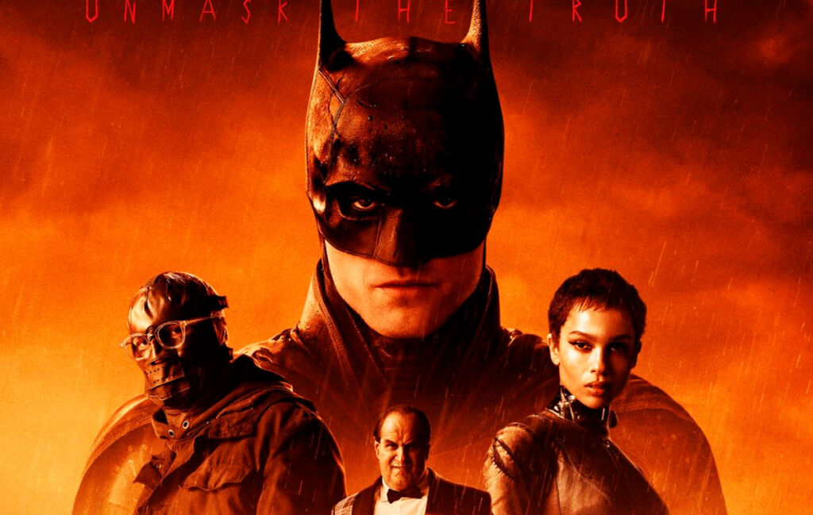
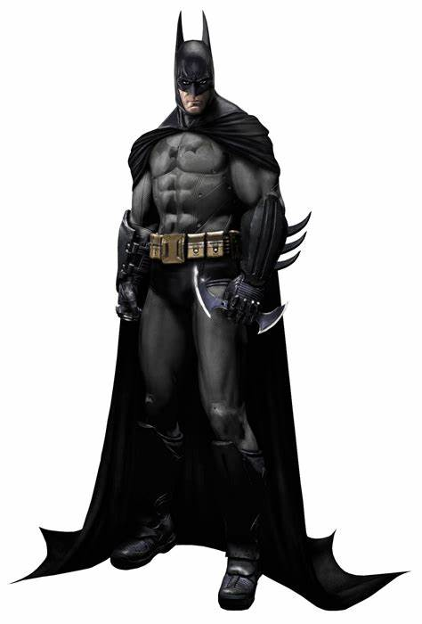
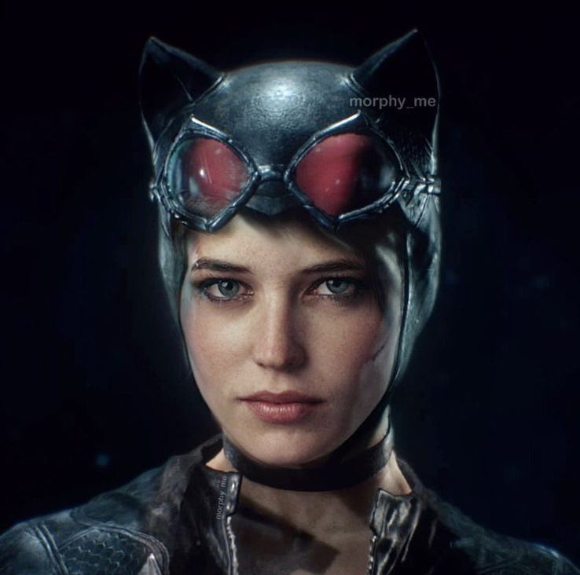
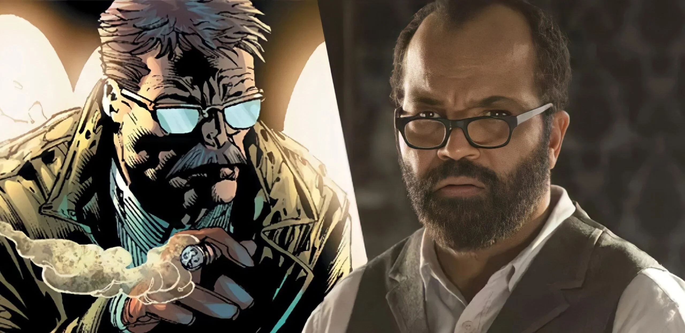

Elenco

Neste filme, Bruce Wayne, após uma jornada de descoberta e adoção de três órfãos pelo mundo,
encontra o Pinguim no Ártico. Ele descobre que um culto planeja a destruição de Gotham City.
Agora, Bruce precisa retornar à sua cidade natal e assumir o manto do Batman para proteger
a cidade onde seus pais foram assassinados por um louco vinte anos atrás. No entanto, ele
logo percebe que não está enfrentando apenas criminosos ou loucos, mas também magia antiga,
demônios de fogo e deuses antigos interdimensionais 1. Uma aventura épica aguarda os fãs
do Cavaleiro das Trevas!
Robert Pattinson: Batman

Robert “Rob” Douglas Thomas Pattinson é um ator, modelo, produtor e músico britânico, o qual
nasceu em Londres no dia 13 de maio de 1986. Em resumo, Rob iniciou a sua carreira na atuação
em 2004, com pequenas pontas em diferentes tipos de projetos.Nesse sentido, o primeiro “grande”
papel do astro do elenco de The Batman veio no filme de televisão “A Maldição do Anel“. Contudo,
no ano seguinte, ele ganhou notoriedade ao interpretar Cedrico Diggory em Harry Potter e o
Cálice de Fogo. E é claro, mais tarde, com o papel de Edward Cullen em Crepúsculo.
Zoë Isabella Kravitz: Mulher gato

é uma atriz, cantora, modelo e produtora, filha do icônico rockstar, Lenny Kravitz, e nascida
em Los Angeles, no dia 1 de dezembro de 1988. Em suma, o seu primeiro papel veio já durante a
sua época de Ensino Médio, onde ela interpretou a babá da dramédia romântica Sem Reservas (2007).
Posteriormente, ela lançou trabalhos musicais – os quais ela se refere como hobbies –, tendo
cantado na Elevator Fight e fundado a banda Lolawolf (além de participar de feats e trilhas
sonoras). Porém, a atuação sempre foi seu foco.
Jeffrey wright- Jim Gordon

Jeffrey Wright é um ator e produtor americano que nasceu em Washington D.C., no dia 7 de dezembro
de 1965. Em síntese, durante o princípio de sua vida adulta, graduou-se em Ciências Políticas (1987),
só que, logo menos foi em busca de sua paixão pela atuação. Então, entrou pro teatro e – já em 1994
– ganhou um Tony Award de ator coadjuvante, por sua aclamada performance em Angels in America.
Posteriormente, ele fez sua estreia nas telas com o filme Basquiat (1996). E após isso, curiosamente,
brilhou na adaptação em minissérie de sua famosa peça, onde em 2004 foi premiado com um Emmy e um
Globo de Ouro. Ainda na televisão, mais tarde ganhou notoriedade pela série da HBO “Westworld“.
Colin James Farrell: Pinguim
.jpg)
é um ator e compositor irlandês, nascido em Dublin, no dia 31 de maio de 1976. Em resumo, o “click”
de que desejava atuar veio depois dele assistir “E.T.” (1982) e se impressionar com o protagonista
mirim, Henry Thomas. Então, em 1998 ele conseguiu um papel na série britânica de drama “Ballykissangel“,
pouco após estrelou nos cinemas, como Nick no filme “Zona de Conflito” (de 1999).